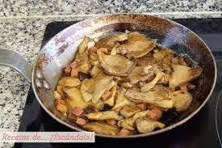

Butifarra con romero
Receta butifarra con setas
Ingredientes
- 1 unidad de butifarra catalana
- 200 gramos de setas
- ½ vaso de Vino blanco
- 1 chorro de Aceite oliva
- 1 pizca de Sal
- 1 pizca de Pimienta negra
- 1 hoja de Laurel
- 1 rama de Romero
Elaboración (Pasos)
- Poner en una sarte las setas y saltearlas

- Sacar las setas una vez echas y poner la butifarra
- una vez la butifarra este casi echa poner las setas encima
- Saltear unos minutos mas para que coga el gusto